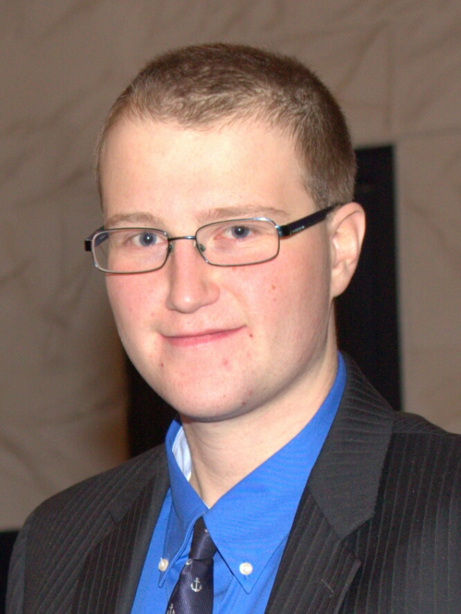

|  | Hello, and welcome to my website. Currently, I’m a master’s Biology student at Villanova University. My bachelor’s degree was in Marine Biology and Entomology (honor’s double major) and was earned at the University of Delaware. I graduated from the University of Delaware in May of 2017 and am set to graduate from Villanova University in May of 2019. This means that my focus at the time is on my graduate research and on being a Teaching Assistant for a variety of classes; most notably General Biology. |
|---|
Previously, my research has focused on topics ranging from how roadside plantings affect insect traffic mortality to developing better tools for evaluating blue crab populations in the Delaware Bay. At this time, however, my research focuses on the phylogenetic relationship between populations of the maritime earwig, Anisolabis maritima, at a global scale. I currently work in Dr. Vikram Iyengar’s lab, along with supervision from Dr. Todd Jackman and Dr. Aaron Bauer to perform non-destructive genetic sampling, PCR, and genetic sequencing on specimens retrieved from museums and the field for my investigation. Additionally, as part of my ongoing research I’m also looking to improve potential non-destructive genetic sampling techniques currently being used for preserved specimens.
If you would like more information about any of my research I recommend you check out my CV page. Additionally, you are more than welcome to contact me with questions and/or inquiries about my work.